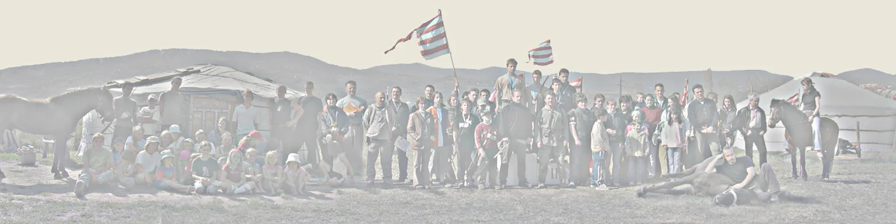
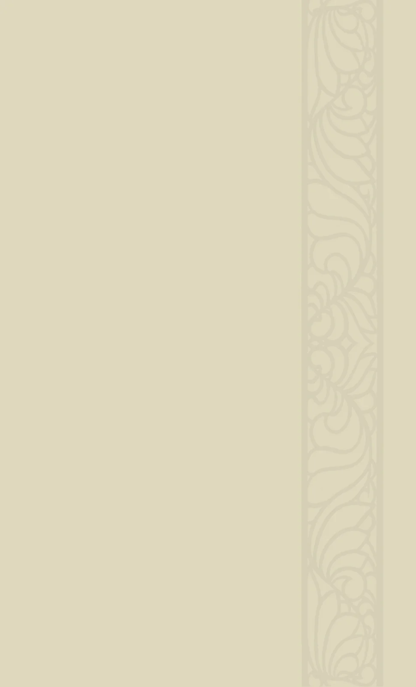

LOVASHARC
Az egyesület tagjai közé bárki beléphet, közhasznú szolgáltatásaiból bárki részesülhet.
A részesedés módját és mértékét azonban a működési szabályzat határozza meg,
és mindkettőt feltételekhez köti.A tagviszonyból eredő részesedés alanyi jogú.
Az egyéb igények alapján felmerülő részesedés lehetőségét az egyesületnek nyújtott támogatás minősége és mértéke határozza meg.* * * * * * * * * * * * * * * * * * * * * * * * * * * * * * * * * * * * *
Az egyesület nem érdekelt abban, hogy sportszolgáltatásait mindenki számára a tagságot megillető kedvezményezett/önköltségi áron biztosítsa.
Valamint abban sem, hogy azoknak, akiknek tevékenysége kizárólag valamely sportszolgáltatás igénybe vételére korlátozódik, - névleges - tagviszonyát fenntartsa, illetve hasonlót a továbbiakban létesítsen.
Az egyesületi tagság létesítése és fenntartása szabad belátás és önálló döntés eredménye.
A tagviszony fenntartásának azonban alapvető feltétele, az egyesület céljainak és működési szabályzatának elfogadása és az önként vállalt tagviszonyból eredő kötelezettségek teljesítése.* * * * * * * * * * * * * * * * * * * * * * * * * * * * * * * * * * * * *
2012. évben - az egyesület személyi állományának alakulása folytán - a működéshez szükséges munkák aránytalanul és logikátlan módon oszlottak meg a tagok között.
Ez a jelenség a gyakorlások/edzések és egyéb tevékenységek jelentős minőségi romlásához vezettek, csökkentették a bevételeket és megnövelték a balesetveszélyt.
A kialakult helyzet megváltoztatása mindenképpen szükségessé vált, ezért 2013. január 15-én tartott közgyűlésen a tagság határozatokat hozott.
2013. április 1.-ig felülvizsgálásra került a tagviszonyok minősége, azok fenntartása illetve megszűntetése, így a valós állapotoknak történő megfeleltetése.További tagsági viszonyok létesítéséhez a tagság 3 hónapos próbaidőt határozott meg.
Az egyesület mindennapos tevékenységeiben, a közösségszervezésben és annak működésében célszerű volt visszatérni korábbi állapotokhoz. A megvalósítás céljából érdekében
minden évszakban egy - évente 4 - közösségi nap/összejövetel szervezését írtuk elő.A tagság és az elnökség az egyesület tevékenységében tagként tevékenykedni szándékozók számára a következő részvételi lehetőségeket határozták meg:
- villanypásztor telepítése, általános karbantartása*
- etetés, itatás
- lovak gondozása, pataápolás
- jurta, kunyhó, stb. restaurálás
- karbantartási munkák - szerszámok, lőtér, természetvédelmi kezelés, stb.
- jurtaállítás
- lovas képzés - kezdő lovasok segítése*
- lovak képzése, mozgatása terepen, kancák mozgatása képzése*
- lovas bemutatók*
- interjúk, előadások, stb.
- adminisztráció, könyvelés, stb.
- információgyűjtés
- felügyelet, helyettesítés*
- szervezési munkák - verseny, gyakorlás, összejövetelek, stb.
- felszerelés karbantartás, készítés
- népszerűsítés, kapcsolattartás
- kiadványszerkesztés

LOVASHARC.HU

